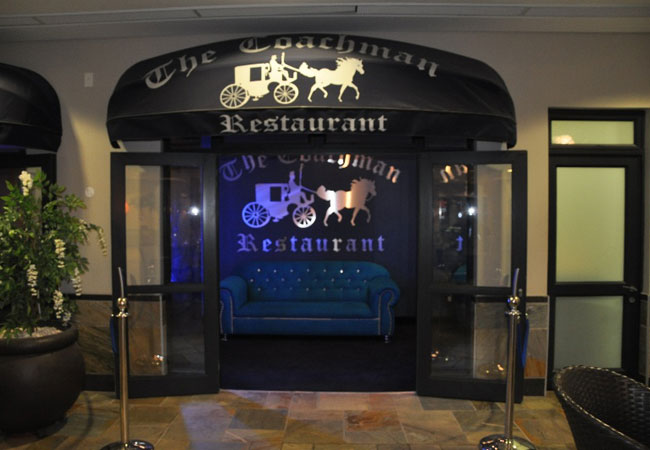

Coachmans Inn was established in 1980 as a French cuisine restaurant amongst nothing more than a school surrounded by veld. As the city has grown around it into the hustle and bustle of Bryanston we know today. The restaurant has always remained mark of personal pride for the owner who has nurtured it over the years
Trading hours
- Mon-Fri : 08:00h - 18:00h
- Sat : 07:00h - 21:00h
- Sun : 09:00h - 10:00h